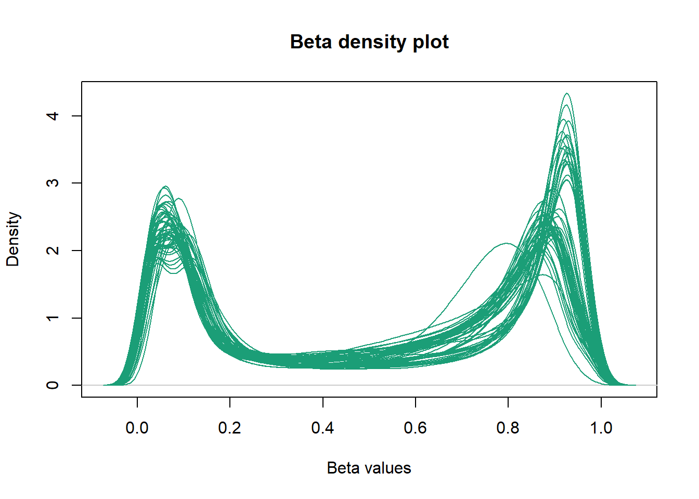
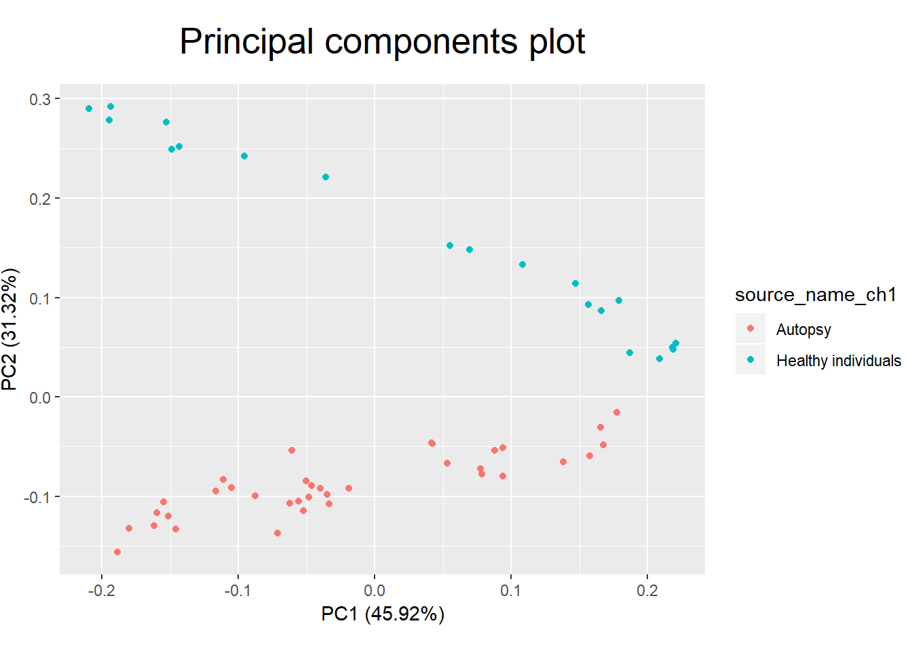
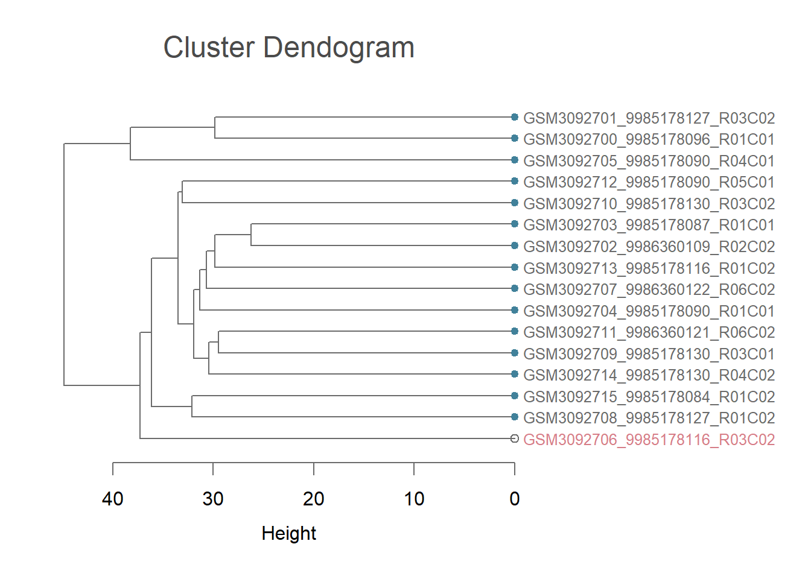

Beta values
In order to further visualize the data, we store the beta values using the getBeta() function from minfi (Aryee et al. 2014). The type="Illumina" option adds 100 to the denominator of the beta-value calculation, preventing NA values being recorded when the methylated and unmethylated signal are both 0.
betas <- getBeta(RGset, type="Illumina")Beta density plots
Using densityPlot() from minfi (Aryee et al. 2014), we can visualize the per sample average beta-value distribution. This gives us a global impression of the data and allows us to identify possible anomalous samples. We expect this distribution to be bimodal with the peaks representing methylated and unmethylated signals. Any centre peaks should be further investigated for problems, such as ambiguous mapping.
library(minfi)
par(mar=c(4,4,3,2), mgp=c(2.5,1,0), cex.main=1.5, font.main="1", fg="#6b6b6b", col.main="#4b4b4b")
densityPlot(RGset, main="Beta density plot", xlab="Beta values", panel.first=ggbg()) 
For this data, the density plot is clearly bimodal with no obvious outliers.
Principal components plot
Using the prcomp_irlba() function from irlba we can calculate principal components. By assessing the amount of variance explained by these and visualising them, we can better interpret the data. The package ggfortify helps ggplot2 interpret PCA objects, allowing prcomp objects to be passed to the autoplot() function.
library(irlba)
pc <- prcomp_irlba(t(betas), n=6)
summary(pc)## Importance of components:
## PC1 PC2 PC3 PC4 PC5 PC6
## Standard deviation 14.4041 10.1145 7.65700 6.83199 4.96062 3.7490
## Proportion of Variance 0.2303 0.1136 0.06509 0.05182 0.02732 0.0156
## Cumulative Proportion 0.2303 0.3439 0.40903 0.46085 0.48817 0.5038library(ggfortify)
autoplot(pc, data=targets, colour="sex", main="Principal components plot") + th1
In this instance, our principal components explain over 50% of the variance in the data and there is evidence of clustering in the plot. By passing the original data to the autoplot() function using the data option, we can investigate clustering by colouring candidate variables. Our data has yet to undergo probe masking, which removes sex chromosome data, so groups of principal components according to whether an individual is male or female appear in the plot.
Heatmap
Each column in the targets dataframe should be considered as a potential covariate in our models. Both technical and biological factors should be investigated as these may introduce batch effects or be clinically relevant. In order to assess this, we convert each column to a categorical variable whose correlations can be visualised.
Homogenous columns can be excluded, as any variables that do not change by definition cannot explain variation in the data. In this instance, the description for all samples is peripheral whole blood, so there is no need to investigate a tissue effect. However, in some instances samples may be taken from different tissues, and in this type of study analysis must be done separately for each to correctly separate clinically relevant methylation changes from tissue-specific methylation differences.
df <- apply(targets, 2, function(x) as.numeric(factor(x)))
keep <- apply(df, 2, sd) > 0
summary(keep)## Mode FALSE TRUE
## logical 25 9df <- df[ , keep]
colnames(df)## [1] "title" "cohort" "age" "cns" "cc_status" "facial"
## [7] "sex" "growth" "Basename"As you can see, 9 columns need to be examined. These include sample identifiers, such as title and our newly created Basename, as well as which cohort the participant was from. Other potential causes of variation are biological, such as age, sex, and cc_status.
Correlations between complete factors and the principal components is calculated, and this correlation matrix is then melted using the melt() function from the reshape2 package. This prepares it for visualization using ggplot2.
cxy <- round(cor(pc$x, scale(df)),2)
cxy[ , 1:9]## title cohort age cns cc_status facial sex growth Basename
## PC1 -0.22 0.15 -0.01 0.09 -0.03 0.04 -1.00 0.06 0.29
## PC2 -0.17 0.15 0.31 0.24 -0.33 0.30 -0.02 0.27 0.00
## PC3 0.44 -0.62 0.17 -0.13 0.05 0.00 -0.07 0.01 -0.43
## PC4 -0.46 0.71 -0.48 -0.04 -0.06 0.02 -0.04 0.03 0.56
## PC5 0.18 -0.13 -0.56 -0.05 0.13 -0.09 -0.02 -0.07 0.00
## PC6 0.09 -0.06 0.03 0.04 -0.06 0.06 0.02 -0.01 -0.10library(reshape2)
melted_cxy <- melt(cxy)
head(melted_cxy)## Var1 Var2 value
## 1 PC1 title -0.22
## 2 PC2 title -0.17
## 3 PC3 title 0.44
## 4 PC4 title -0.46
## 5 PC5 title 0.18
## 6 PC6 title 0.09After some aesthetic preparation of the theme(), the correlations can be visualized in a heatmap using ggplot2’s geom_tile() function.
library(ggplot2)
ggplot(data = melted_cxy, aes(x=Var1, y=Var2, fill=value)) + th2 + th3 + th4 + th5 +
geom_tile(colour="#adadad",size=0.5) + ggtitle("Heatmap of Correlations") + labs(x="",y="")
By examining correlations in the data we can see that there is a strong positive correlation between sex and PC1. This indicates that this PC explains much of the variation causes by sex differences, unsurprisingly given the clustering we observed before.
Dendrogram
Although more frequently used for moderately-sized data sets, a dendogram can be helpful to visualise clustering. We use dist() to compute the distance matrix for the beta values, before implementing hierarchical cluster analysis with hclust() from the fastcluster-package.
library(fastcluster)
sBeta <- getBeta(RGset[,1:16], type="Illumina")
d <- dist(t(sBeta), method="euclidean")
fit <- hclust(d, method="average")We can highlight an observation of interest and then visualize using a dendrogram. Here, we randomly sample one observation using sample() and then colour this red with the ColorLeafs function. We then convert the data to a dendrogram format and plot() it.
interestObs <- sample(colnames(sBeta), 1)
colorLeafs <- function(x) {
if (is.leaf(x) && attr(x, "label") %in% interestObs) {
attr(x, "nodePar") <- list(lab.cex=0.8, lab.col="#D67D87")
}
return(x)
}
fitdd <- dendrapply(as.dendrogram(fit), colorLeafs)
nodePar <- list(lab.cex=0.8, cex=0.8, col="#41819a", pch = c(NA, 19))
par(mar=c(5,2,4,12), mgp=c(2.5,1,0), cex.main=1.5, font.main="1", fg="#6b6b6b", col.main="#4b4b4b")
plot(fitdd, main="Cluster Dendogram", horiz=TRUE, nodePar=nodePar, xlab="Height")
References
Aryee, Martin J., Andrew E. Jaffe, Hector Corrada-Bravo, Christine Ladd-Acosta, Andrew P. Feinberg, Kasper D. Hansen, and Rafael A. Irizarry. 2014. “Minfi: A flexible and comprehensive Bioconductor package for the analysis of Infinium DNA methylation microarrays.” Bioinformatics 30 (10). Oxford University Press: 1363–9. doi:10.1093/bioinformatics/btu049.